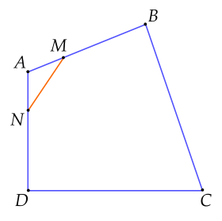

Câu 2. Hình họcKhông vẽ hình
Từ điểm $M$ nằm ngoài đường tròn $(O)$ vẽ hai tiếp tuyến $MA, MB(A, B$ là tiếp điểm). Gọi $H$ là giao điểm của $MO$ và $AB$ . Vẽ đường kính $BD$ của đường tròn $(O)$ . Gọi $K$ là hình chiếu của $A$ trên $BD$ .
a) Chứng minh bốn điểm $O, H, A, K$ cùng nằm trên một đường tròn.
b) Gọi $I$ là giao điểm của $AK$ và $MD$ . Chứng minh $I$ là trung điểm của $AK$ .
c) Đường thẳng $M D$ cắt đường tròn $(O)$ tại điểm thứ hai $C$ . Tiếp tuyến tại $C$ của $(O)$ cắt $MA, MB$ lần lượt tại $E, F$ . Gọi $G$ là giao điểm của $OE$ và $AD, N$ là giao điểm của $CD$ và $HG$ . Chứng minh ba điểm $A, N, F$ thẳng hàng.
Câu trả lời của bạn:
Câu 3. Đại số
Lớp 10A có $45$ học sinh, trong đó có $18$ học sinh tham gia cuộc thi vẽ đồ họa trên máy tính, $24$ học sinh tham gia cuộc thi tin học văn phòng cấp trường và $9$ học sinh không tham gia cả hai cuộc thi này. Tính số học sinh của lớp 10A tham gia đồng thời cả hai cuộc thi.
Câu trả lời của bạn:
Câu 5. Hình họcKhông vẽ hình
Cho tam giác $ABC$ vuông tại $A$ , có $AB = 6$ cm; $BC = 10$ cm, đường cao $AH$ .
a) Tính số đo góc $ABC$ và độ dài $AH$ ;
b) Chứng minh rằng $BC = AB.\cos {B} + AC. \cos {C}$ .
Câu trả lời của bạn:
Câu 7. Đại số
Một cửa hàng có $6$ thùng hàng với khối lượng lần lượt là $43$ kg; $35$ kg; $32$ kg; $24$ kg; $27$ kg; $34$ kg. Trong hai ngày, cửa hàng bán được $5$ thùng hàng (mỗi thùng chỉ bán nguyên thùng), biết khối lượng hàng bán được trong ngày thứ nhất gấp $4$ lần khối lượng hàng bán được trong ngày thứ hai. Hỏi thùng hàng còn lại nặng bao nhiêu ki-lô-gam?
Câu trả lời của bạn:
Câu 8. Đại số
Một trường học có $1\,320$ học sinh, trong đó tổng số học sinh khối $6$ và $7$ bằng $\dfrac{25}{44}$ tổng số học sinh toàn trường. Số học sinh khối $8$ chiếm $25\%$ tổng số học sinh toàn trường. Còn lại là học sinh khối $9$ . Mỗi khối có bao nhiêu học sinh? Biết rằng tổng số học sinh khối $6$ và khối $8$ gấp hai lần số học sinh khối $7$ .
Câu trả lời của bạn:
Câu 9. Hình họcCó vẽ hình
Ông An có một mảnh đất hình tứ giác $ABCD$ với $AB=4,4$ m; $BC= 16,3$ m; $CD=7,2$ m; $AD=6,2$ m. Để tính diện tích mảnh đất, ông An lấy các điểm $M, \,N$ lần lượt trên các cạnh $AB, \, A D$ sao cho $AM=1$ m, $AN=1$ m. Ông An đo được $MN=1,8$ m (tham khảo hình vẽ bên dưới). Tính diện tích mảnh đất đó (làm tròn kết quả đến hàng phần trăm).

Câu 10. Hình họcKhông vẽ hình
Viết giả thiết kết luận và chứng minh định lí sau: "Nếu hai đường thẳng $xx'$ , $yy'$ cắt nhau tại $O$ và góc $xOy$ vuông thì các góc $\widehat{yOx'}$ , $\widehat{x'Oy'}$ , $\widehat{yOx}$ đều là góc vuông".
Câu trả lời của bạn: